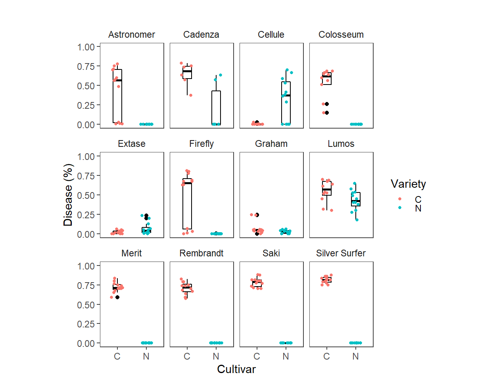

Cougar varieties screen
Load packages
## [1] "All packages were successfully loaded."Load the disease data
| Exp | Isolate | Source | Variety | Pycnidia |
|---|---|---|---|---|
| 1 | 1 | N | Saki | 0.000 |
| 1 | 1 | N | Lumos | 0.375 |
| 1 | 1 | N | Merit | 0.000 |
| 1 | 1 | N | Extase | 0.200 |
| 1 | 1 | N | Silver Surfer | 0.000 |
| 1 | 1 | N | Graham | 0.025 |

The test variable was made by concatenating the test cultivar and the source cultivar names.
Model Fitting
A small numeric constant was added to avoid fitting the zero inflated model.
Accounting for random effects results in appropriate estimates of fixed effects which is why we used generalized linear mixed model (GLMM). Since the values of the response variable, rAUDPC are proportions, beta GLMMs. Stochastic (random-effect) component was the test and the deterministic (fixed-effect) were block and the combined variable (Test_Source).Block is not significant so we can remove it.
## Family: beta ( logit )
## Formula: Pycnidia ~ Variety_Source + (1 | Isolate)
## Data: dta
##
## AIC BIC logLik deviance df.resid
## -4182.3 -4088.1 2117.1 -4234.3 250
##
## Random effects:
##
## Conditional model:
## Groups Name Variance Std.Dev.
## Isolate (Intercept) 0.1114 0.3337
## Number of obs: 276, groups: Isolate, 6
##
## Overdispersion parameter for beta family (): 3.7
##
## Conditional model:
## Estimate Std. Error z value Pr(>|z|)
## (Intercept) -0.6214 0.3127 -1.987 0.046877 *
## Variety_SourceAstronomer_N -3.7515 0.4790 -7.831 4.83e-15 ***
## Variety_SourceCadenza_C 1.1319 0.4749 2.383 0.017149 *
## Variety_SourceCadenza_N -3.2863 0.5660 -5.806 6.39e-09 ***
## Variety_SourceCellule_C -3.5565 0.3988 -8.919 < 2e-16 ***
## Variety_SourceCellule_N -2.4981 0.5001 -4.995 5.88e-07 ***
## Variety_SourceColosseum_C 0.7563 0.3628 2.085 0.037079 *
## Variety_SourceColosseum_N -3.7515 0.4790 -7.831 4.83e-15 ***
## Variety_SourceExtase_C -2.6111 0.3905 -6.686 2.29e-11 ***
## Variety_SourceExtase_N -1.8402 0.4782 -3.848 0.000119 ***
## Variety_SourceFirefly_C -0.4250 0.3469 -1.225 0.220539
## Variety_SourceFirefly_N -3.6784 0.4791 -7.678 1.62e-14 ***
## Variety_SourceGraham_C -1.7318 0.3891 -4.451 8.56e-06 ***
## Variety_SourceGraham_N -2.5117 0.4831 -5.199 2.00e-07 ***
## Variety_SourceLumos_C 0.7857 0.3686 2.132 0.033037 *
## Variety_SourceLumos_N 0.3811 0.4527 0.842 0.399832
## Variety_SourceMerit_C 1.3595 0.3732 3.643 0.000270 ***
## Variety_SourceMerit_N -3.7515 0.4790 -7.831 4.83e-15 ***
## Variety_SourceRembrandt_C 1.3258 0.3740 3.545 0.000393 ***
## Variety_SourceRembrandt_N -3.7515 0.4790 -7.831 4.83e-15 ***
## Variety_SourceSaki_C 1.6255 0.3793 4.286 1.82e-05 ***
## Variety_SourceSaki_N -3.7515 0.4790 -7.831 4.83e-15 ***
## Variety_SourceSilver Surfer_C 1.7573 0.3816 4.605 4.12e-06 ***
## Variety_SourceSilver Surfer_N -3.7515 0.4790 -7.831 4.83e-15 ***
## ---
## Signif. codes: 0 '***' 0.001 '**' 0.01 '*' 0.05 '.' 0.1 ' ' 1Goodness-of-fit of the models was evaluated using the qqplots of residuals.
prepare data for plotting